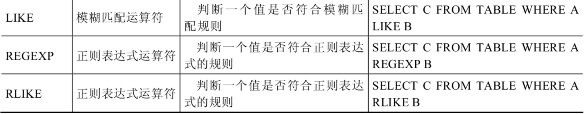

常见的 SQL
运算符汇总与用法示例，涵盖算术、比较、逻辑、位运算及正则匹配等多种操作符。
1. 算术运算符
算术运算符主要用于数学运算，其可以连接运算符前后的两个数值或表达式，对数值或表达式进行加（+）、减（-）、乘（*）、除（/）和取模（%）运算。
image-20211012100749193
1．加法与减法运算符
1 2 3 4 5 6 7 mysql> SELECT 100, 100 + 0, 100 - 0, 100 + 50, 100 + 50 -30, 100 + 35.5, 100 - 35.5 FROM dual; +-----+---------+---------+----------+--------------+------------+------------+ | 100 | 100 + 0 | 100 - 0 | 100 + 50 | 100 + 50 -30 | 100 + 35.5 | 100 - 35.5 | +-----+---------+---------+----------+--------------+------------+------------+ | 100 | 100 | 100 | 150 | 120 | 135.5 | 64.5 | +-----+---------+---------+----------+--------------+------------+------------+ 1 row in set (0.00 sec)
由运算结果可以得出如下结论：
一个整数类型的值对整数进行加法和减法操作，结果还是一个整数；
一个整数类型的值对浮点数进行加法和减法操作，结果是一个浮点数；
加法和减法的优先级相同，进行先加后减操作与进行先减后加操作的结果是一样的；
在Java中，+的左右两边如果有字符串，那么表示字符串的拼接。但是在MySQL中+只表示数值相加。如果遇到非数值类型，先尝试转成数值，如果转失败，就按0计算。（补充：MySQL中字符串拼接要使用字符串函数CONCAT()实现 ）
2．乘法与除法运算符
1 2 3 4 5 6 7 mysql> SELECT 100, 100 * 1, 100 * 1.0, 100 / 1.0, 100 / 2,100 + 2 * 5 / 2,100 /3, 100 DIV 0 FROM dual; +-----+---------+-----------+-----------+---------+-----------------+---------+-----------+ | 100 | 100 * 1 | 100 * 1.0 | 100 / 1.0 | 100 / 2 | 100 + 2 * 5 / 2 | 100 /3 | 100 DIV 0 | +-----+---------+-----------+-----------+---------+-----------------+---------+-----------+ | 100 | 100 | 100.0 | 100.0000 | 50.0000 | 105.0000 | 33.3333 | NULL | +-----+---------+-----------+-----------+---------+-----------------+---------+-----------+ 1 row in set (0.00 sec)
1 2 3 #计算出员工的年基本工资 SELECT employee_id,salary,salary * 12 annual_sal FROM employees;
由运算结果可以得出如下结论：
一个数乘以整数1和除以整数1后仍得原数；
一个数乘以浮点数1和除以浮点数1后变成浮点数，数值与原数相等；
一个数除以整数后，不管是否能除尽，结果都为一个浮点数；
一个数除以另一个数，除不尽时，结果为一个浮点数，并保留到小数点后4位；
乘法和除法的优先级相同，进行先乘后除操作与先除后乘操作，得出的结果相同。
在数学运算中，0不能用作除数，在MySQL中，一个数除以0为NULL。
3．求模（求余）运算符
将t22表中的字段i对3和5进行求模（求余）运算。
1 2 3 4 5 6 7 mysql> SELECT 12 % 3, 12 MOD 5 FROM dual; +--------+----------+ | 12 % 3 | 12 MOD 5 | +--------+----------+ | 0 | 2 | +--------+----------+ 1 row in set (0.00 sec)
1 2 3 #筛选出employee_id是偶数的员工 SELECT * FROM employees WHERE employee_id MOD 2 = 0;
可以看到，100对3求模后的结果为3，对5求模后的结果为0。
2. 比较运算符
比较运算符用来对表达式左边的操作数和右边的操作数进行比较，比较的结果为真则返回1，比较的结果为假则返回0，其他情况则返回NULL。
比较运算符经常被用来作为SELECT查询语句的条件来使用，返回符合条件的结果记录。
image-20211012104955094
1．等号运算符
1 2 3 4 5 6 7 mysql> SELECT 1 = 1, 1 = '1', 1 = 0, 'a' = 'a', (5 + 3) = (2 + 6), '' = NULL , NULL = NULL; +-------+---------+-------+-----------+-------------------+-----------+-------------+ | 1 = 1 | 1 = '1' | 1 = 0 | 'a' = 'a' | (5 + 3) = (2 + 6) | '' = NULL | NULL = NULL | +-------+---------+-------+-----------+-------------------+-----------+-------------+ | 1 | 1 | 0 | 1 | 1 | NULL | NULL | +-------+---------+-------+-----------+-------------------+-----------+-------------+ 1 row in set (0.00 sec)
1 2 3 4 5 6 7 mysql> SELECT 1 = 2, 0 = 'abc', 1 = 'abc' FROM dual; +-------+-----------+-----------+ | 1 = 2 | 0 = 'abc' | 1 = 'abc' | +-------+-----------+-----------+ | 0 | 1 | 0 | +-------+-----------+-----------+ 1 row in set, 2 warnings (0.00 sec)
1 2 #查询salary=10000，注意在Java中比较是== SELECT employee_id,salary FROM employees WHERE salary = 10000;
2．安全等于运算符
安全等于运算符（<=>）与等于运算符（=）的作用是相似的，唯一的区别是‘<=>’可以用来对NULL进行判断。在两个操作数均为NULL时，其返回值为1，而不为NULL；当一个操作数为NULL时，其返回值为0，而不为NULL。
1 2 3 4 5 6 7 mysql> SELECT 1 <=> '1', 1 <=> 0, 'a' <=> 'a', (5 + 3) <=> (2 + 6), '' <=> NULL,NULL <=> NULL FROM dual; +-----------+---------+-------------+---------------------+-------------+---------------+ | 1 <=> '1' | 1 <=> 0 | 'a' <=> 'a' | (5 + 3) <=> (2 + 6) | '' <=> NULL | NULL <=> NULL | +-----------+---------+-------------+---------------------+-------------+---------------+ | 1 | 0 | 1 | 1 | 0 | 1 | +-----------+---------+-------------+---------------------+-------------+---------------+ 1 row in set (0.00 sec)
1 2 3 4 5 6 #查询commission_pct等于0.40 SELECT employee_id,commission_pct FROM employees WHERE commission_pct = 0.40; SELECT employee_id,commission_pct FROM employees WHERE commission_pct <=> 0.40; #如果把0.40改成 NULL 呢？
可以看到，使用安全等于运算符时，两边的操作数的值都为NULL时，返回的结果为1而不是NULL，其他返回结果与等于运算符相同。
3．不等于运算符
不等于运算符（<>和!=）用于判断两边的数字、字符串或者表达式的值是否不相等，如果不相等则返回1，相等则返回0。不等于运算符不能判断NULL值。如果两边的值有任意一个为NULL，或两边都为NULL，则结果为NULL。
SQL语句示例如下：
1 2 3 4 5 6 7 mysql> SELECT 1 <> 1, 1 != 2, 'a' != 'b', (3+4) <> (2+6), 'a' != NULL, NULL <> NULL; +--------+--------+------------+----------------+-------------+--------------+ | 1 <> 1 | 1 != 2 | 'a' != 'b' | (3+4) <> (2+6) | 'a' != NULL | NULL <> NULL | +--------+--------+------------+----------------+-------------+--------------+ | 0 | 1 | 1 | 1 | NULL | NULL | +--------+--------+------------+----------------+-------------+--------------+ 1 row in set (0.00 sec)
此外，还有非符号类型的运算符：
image-20211012105303219
image-20211012105030527

image-20211012105052456
4. 空运算符 空运算符（IS
NULL或者ISNULL）判断一个值是否为NULL，如果为NULL则返回1，否则返回0。
SQL语句示例如下：
1 2 3 4 5 6 7 mysql> SELECT NULL IS NULL, ISNULL(NULL), ISNULL('a'), 1 IS NULL; +--------------+--------------+-------------+-----------+ | NULL IS NULL | ISNULL(NULL) | ISNULL('a') | 1 IS NULL | +--------------+--------------+-------------+-----------+ | 1 | 1 | 0 | 0 | +--------------+--------------+-------------+-----------+ 1 row in set (0.00 sec)
1 2 3 4 5 #查询commission_pct等于NULL。比较如下的四种写法 SELECT employee_id,commission_pct FROM employees WHERE commission_pct IS NULL; SELECT employee_id,commission_pct FROM employees WHERE commission_pct <=> NULL; SELECT employee_id,commission_pct FROM employees WHERE ISNULL(commission_pct); SELECT employee_id,commission_pct FROM employees WHERE commission_pct = NULL;
1 2 3 SELECT last_name, manager_id FROM employees WHERE manager_id IS NULL;
5. 非空运算符 非空运算符（IS NOT
NULL）判断一个值是否不为NULL，如果不为NULL则返回1，否则返回0。
SQL语句示例如下：
1 2 3 4 5 6 7 mysql> SELECT NULL IS NOT NULL, 'a' IS NOT NULL, 1 IS NOT NULL; +------------------+-----------------+---------------+ | NULL IS NOT NULL | 'a' IS NOT NULL | 1 IS NOT NULL | +------------------+-----------------+---------------+ | 0 | 1 | 1 | +------------------+-----------------+---------------+ 1 row in set (0.01 sec)
1 2 3 4 #查询commission_pct不等于NULL SELECT employee_id,commission_pct FROM employees WHERE commission_pct IS NOT NULL; SELECT employee_id,commission_pct FROM employees WHERE NOT commission_pct <=> NULL; SELECT employee_id,commission_pct FROM employees WHERE NOT ISNULL(commission_pct);
6. 最小值运算符
语法格式为：LEAST(值1，值2，…，值n)。其中，“值n”表示参数列表中有n个值。在有两个或多个参数的情况下，返回最小值。
1 2 3 4 5 6 7 mysql> SELECT LEAST (1,0,2), LEAST('b','a','c'), LEAST(1,NULL,2); +---------------+--------------------+-----------------+ | LEAST (1,0,2) | LEAST('b','a','c') | LEAST(1,NULL,2) | +---------------+--------------------+-----------------+ | 0 | a | NULL | +---------------+--------------------+-----------------+ 1 row in set (0.00 sec)
由结果可以看到，当参数是整数或者浮点数时，LEAST将返回其中最小的值；当参数为字符串时，返回字母表中顺序最靠前的字符；当比较值列表中有NULL时，不能判断大小，返回值为NULL。
7. 最大值运算符
语法格式为：GREATEST(值1，值2，…，值n)。其中，n表示参数列表中有n个值。当有两个或多个参数时，返回值为最大值。假如任意一个自变量为NULL，则GREATEST()的返回值为NULL。
1 2 3 4 5 6 7 mysql> SELECT GREATEST(1,0,2), GREATEST('b','a','c'), GREATEST(1,NULL,2); +-----------------+-----------------------+--------------------+ | GREATEST(1,0,2) | GREATEST('b','a','c') | GREATEST(1,NULL,2) | +-----------------+-----------------------+--------------------+ | 2 | c | NULL | +-----------------+-----------------------+--------------------+ 1 row in set (0.00 sec)
由结果可以看到，当参数中是整数或者浮点数时，GREATEST将返回其中最大的值；当参数为字符串时，返回字母表中顺序最靠后的字符；当比较值列表中有NULL时，不能判断大小，返回值为NULL。
8. BETWEEN AND运算符
BETWEEN运算符使用的格式通常为SELECT D FROM TABLE WHERE C BETWEEN A AND
B，此时，当C大于或等于A，并且C小于或等于B时，结果为1，否则结果为0。
1 2 3 4 5 6 7 mysql> SELECT 1 BETWEEN 0 AND 1, 10 BETWEEN 11 AND 12, 'b' BETWEEN 'a' AND 'c'; +-------------------+----------------------+-------------------------+ | 1 BETWEEN 0 AND 1 | 10 BETWEEN 11 AND 12 | 'b' BETWEEN 'a' AND 'c' | +-------------------+----------------------+-------------------------+ | 1 | 0 | 1 | +-------------------+----------------------+-------------------------+ 1 row in set (0.00 sec)
1 2 3 SELECT last_name, salary FROM employees WHERE salary BETWEEN 2500 AND 3500;
9. IN运算符
IN运算符用于判断给定的值是否是IN列表中的一个值，如果是则返回1，否则返回0。如果给定的值为NULL，或者IN列表中存在NULL，则结果为NULL。
1 2 3 4 5 6 7 mysql> SELECT 'a' IN ('a','b','c'), 1 IN (2,3), NULL IN ('a','b'), 'a' IN ('a', NULL); +----------------------+------------+-------------------+--------------------+ | 'a' IN ('a','b','c') | 1 IN (2,3) | NULL IN ('a','b') | 'a' IN ('a', NULL) | +----------------------+------------+-------------------+--------------------+ | 1 | 0 | NULL | 1 | +----------------------+------------+-------------------+--------------------+ 1 row in set (0.00 sec)
1 2 3 SELECT employee_id, last_name, salary, manager_id FROM employees WHERE manager_id IN (100, 101, 201);
10. NOT IN运算符 NOT
IN运算符用于判断给定的值是否不是IN列表中的一个值，如果不是IN列表中的一个值，则返回1，否则返回0。
1 2 3 4 5 6 7 mysql> SELECT 'a' NOT IN ('a','b','c'), 1 NOT IN (2,3); +--------------------------+----------------+ | 'a' NOT IN ('a','b','c') | 1 NOT IN (2,3) | +--------------------------+----------------+ | 0 | 1 | +--------------------------+----------------+ 1 row in set (0.00 sec)
11. LIKE运算符
LIKE运算符主要用来匹配字符串，通常用于模糊匹配，如果满足条件则返回1，否则返回0。如果给定的值或者匹配条件为NULL，则返回结果为NULL。
LIKE运算符通常使用如下通配符：
1 2 “%”：匹配0个或多个字符。 “_”：只能匹配一个字符。
SQL语句示例如下：
1 2 3 4 5 6 7 mysql> SELECT NULL LIKE 'abc', 'abc' LIKE NULL; +-----------------+-----------------+ | NULL LIKE 'abc' | 'abc' LIKE NULL | +-----------------+-----------------+ | NULL | NULL | +-----------------+-----------------+ 1 row in set (0.00 sec)
1 2 3 SELECT first_name FROM employees WHERE first_name LIKE 'S%';
1 2 3 SELECT last_name FROM employees WHERE last_name LIKE '_o%';
ESCAPE
回避特殊符号的：使用转义符 。例如：将[%]转为[
1 2 3 SELECT job_id FROM jobs WHERE job_id LIKE ‘IT\_%‘;
如果使用，要省略ESCAPE。如果不是，则要加上ESCAPE。
1 2 3 SELECT job_id FROM jobs WHERE job_id LIKE ‘IT$_%‘ escape ‘$‘;
12. REGEXP运算符
REGEXP运算符用来匹配字符串，语法格式为：expr REGEXP 匹配条件。如果expr满足匹配条件，返回1；如果不满足，则返回0。若expr或匹配条件任意一个为NULL，则结果为NULL。
REGEXP运算符在进行匹配时，常用的有下面几种通配符：
1 2 3 4 5 （1）‘^’匹配以该字符后面的字符开头的字符串。 （2）‘$’匹配以该字符前面的字符结尾的字符串。 （3）‘.’匹配任何一个单字符。 （4）“[...]”匹配在方括号内的任何字符。例如，“[abc]”匹配“a”或“b”或“c”。为了命名字符的范围，使用一个‘-’。“[a-z]”匹配任何字母，而“[0-9]”匹配任何数字。 （5）‘*’匹配零个或多个在它前面的字符。例如，“x*”匹配任何数量的‘x’字符，“[0-9]*”匹配任何数量的数字，而“*”匹配任何数量的任何字符。
SQL语句示例如下：
1 2 3 4 5 6 7 mysql> SELECT 'shkstart' REGEXP '^s', 'shkstart' REGEXP 't$', 'shkstart' REGEXP 'hk'; +------------------------+------------------------+-------------------------+ | 'shkstart' REGEXP '^s' | 'shkstart' REGEXP 't$' | 'shkstart' REGEXP 'hk' | +------------------------+------------------------+-------------------------+ | 1 | 1 | 1 | +------------------------+------------------------+-------------------------+ 1 row in set (0.01 sec)
1 2 3 4 5 6 7 mysql> SELECT 'atguigu' REGEXP 'gu.gu', 'atguigu' REGEXP '[ab]'; +--------------------------+-------------------------+ | 'atguigu' REGEXP 'gu.gu' | 'atguigu' REGEXP '[ab]' | +--------------------------+-------------------------+ | 1 | 1 | +--------------------------+-------------------------+ 1 row in set (0.00 sec)
3. 逻辑运算符
逻辑运算符主要用来判断表达式的真假，在MySQL中，逻辑运算符的返回结果为1、0或者NULL。
MySQL中支持4种逻辑运算符如下：
1．逻辑非运算符
逻辑非（NOT或!）运算符表示当给定的值为0时返回1；当给定的值为非0值时返回0；当给定的值为NULL时，返回NULL。
1 2 3 4 5 6 7 mysql> SELECT NOT 1, NOT 0, NOT(1+1), NOT !1, NOT NULL; +-------+-------+----------+--------+----------+ | NOT 1 | NOT 0 | NOT(1+1) | NOT !1 | NOT NULL | +-------+-------+----------+--------+----------+ | 0 | 1 | 0 | 1 | NULL | +-------+-------+----------+--------+----------+ 1 row in set, 1 warning (0.00 sec)
1 2 3 SELECT last_name, job_id FROM employees WHERE job_id NOT IN ('IT_PROG', 'ST_CLERK', 'SA_REP');
2．逻辑与运算符
逻辑与（AND或&&）运算符是当给定的所有值均为非0值，并且都不为NULL时，返回1；当给定的一个值或者多个值为0时则返回0；否则返回NULL。
1 2 3 4 5 6 7 mysql> SELECT 1 AND -1, 0 AND 1, 0 AND NULL, 1 AND NULL; +----------+---------+------------+------------+ | 1 AND -1 | 0 AND 1 | 0 AND NULL | 1 AND NULL | +----------+---------+------------+------------+ | 1 | 0 | 0 | NULL | +----------+---------+------------+------------+ 1 row in set (0.00 sec)
1 2 3 4 SELECT employee_id, last_name, job_id, salary FROM employees WHERE salary >=10000 AND job_id LIKE '%MAN%';
3．逻辑或运算符
逻辑或（OR或||）运算符是当给定的值都不为NULL，并且任何一个值为非0值时，则返回1，否则返回0；当一个值为NULL，并且另一个值为非0值时，返回1，否则返回NULL；当两个值都为NULL时，返回NULL。
1 2 3 4 5 6 7 mysql> SELECT 1 OR -1, 1 OR 0, 1 OR NULL, 0 || NULL, NULL || NULL; +---------+--------+-----------+-----------+--------------+ | 1 OR -1 | 1 OR 0 | 1 OR NULL | 0 || NULL | NULL || NULL | +---------+--------+-----------+-----------+--------------+ | 1 | 1 | 1 | NULL | NULL | +---------+--------+-----------+-----------+--------------+ 1 row in set, 2 warnings (0.00 sec)
1 2 3 4 5 6 7 8 9 #查询基本薪资不在9000-12000之间的员工编号和基本薪资 SELECT employee_id,salary FROM employees WHERE NOT (salary >= 9000 AND salary <= 12000); SELECT employee_id,salary FROM employees WHERE salary <9000 OR salary > 12000; SELECT employee_id,salary FROM employees WHERE salary NOT BETWEEN 9000 AND 12000;
1 2 3 4 SELECT employee_id, last_name, job_id, salary FROM employees WHERE salary >= 10000 OR job_id LIKE '%MAN%';
注意：
OR可以和AND一起使用，但是在使用时要注意两者的优先级，由于AND的优先级高于OR，因此先对AND两边的操作数进行操作，再与OR中的操作数结合。
4．逻辑异或运算符
逻辑异或（XOR）运算符是当给定的值中任意一个值为NULL时，则返回NULL；如果两个非NULL的值都是0或者都不等于0时，则返回0；如果一个值为0，另一个值不为0时，则返回1。
1 2 3 4 5 6 7 mysql> SELECT 1 XOR -1, 1 XOR 0, 0 XOR 0, 1 XOR NULL, 1 XOR 1 XOR 1, 0 XOR 0 XOR 0; +----------+---------+---------+------------+---------------+---------------+ | 1 XOR -1 | 1 XOR 0 | 0 XOR 0 | 1 XOR NULL | 1 XOR 1 XOR 1 | 0 XOR 0 XOR 0 | +----------+---------+---------+------------+---------------+---------------+ | 0 | 1 | 0 | NULL | 1 | 0 | +----------+---------+---------+------------+---------------+---------------+ 1 row in set (0.00 sec)
1 2 3 select last_name,department_id,salary from employees where department_id in (10,20) XOR salary > 8000;
4. 位运算符
位运算符是在二进制数上进行计算的运算符。位运算符会先将操作数变成二进制数，然后进行位运算，最后将计算结果从二进制变回十进制数。
MySQL支持的位运算符如下：
1．按位与运算符
按位与（&）运算符将给定值对应的二进制数逐位进行逻辑与运算。当给定值对应的二进制位的数值都为1时，则该位返回1，否则返回0。
1 2 3 4 5 6 7 mysql> SELECT 1 & 10, 20 & 30; +--------+---------+ | 1 & 10 | 20 & 30 | +--------+---------+ | 0 | 20 | +--------+---------+ 1 row in set (0.00 sec)
1的二进制数为0001，10的二进制数为1010，所以1 &
10的结果为0000，对应的十进制数为0。20的二进制数为10100，30的二进制数为11110，所以20
& 30的结果为10100，对应的十进制数为20。
2. 按位或运算符
按位或（|）运算符将给定的值对应的二进制数逐位进行逻辑或运算。当给定值对应的二进制位的数值有一个或两个为1时，则该位返回1，否则返回0。
1 2 3 4 5 6 7 mysql> SELECT 1 | 10, 20 | 30; +--------+---------+ | 1 | 10 | 20 | 30 | +--------+---------+ | 11 | 30 | +--------+---------+ 1 row in set (0.00 sec)
1的二进制数为0001，10的二进制数为1010，所以1 |
10的结果为1011，对应的十进制数为11。20的二进制数为10100，30的二进制数为11110，所以20
| 30的结果为11110，对应的十进制数为30。
3. 按位异或运算符
按位异或（^）运算符将给定的值对应的二进制数逐位进行逻辑异或运算。当给定值对应的二进制位的数值不同时，则该位返回1，否则返回0。
1 2 3 4 5 6 7 mysql> SELECT 1 ^ 10, 20 ^ 30; +--------+---------+ | 1 ^ 10 | 20 ^ 30 | +--------+---------+ | 11 | 10 | +--------+---------+ 1 row in set (0.00 sec)
1的二进制数为0001，10的二进制数为1010，所以1 ^
10的结果为1011，对应的十进制数为11。20的二进制数为10100，30的二进制数为11110，所以20
^ 30的结果为01010，对应的十进制数为10。
再举例：
1 2 3 4 5 6 7 mysql> SELECT 12 & 5, 12 | 5,12 ^ 5 FROM DUAL; +--------+--------+--------+ | 12 & 5 | 12 | 5 | 12 ^ 5 | +--------+--------+--------+ | 4 | 13 | 9 | +--------+--------+--------+ 1 row in set (0.00 sec)
4. 按位取反运算符
按位取反（~）运算符将给定的值的二进制数逐位进行取反操作，即将1变为0，将0变为1。
1 2 3 4 5 6 7 mysql> SELECT 10 & ~1; +---------+ | 10 & ~1 | +---------+ | 10 | +---------+ 1 row in set (0.00 sec)
由于按位取反（~）运算符的优先级高于按位与（&）运算符的优先级，所以10
&
~1，首先，对数字1进行按位取反操作，结果除了最低位为0，其他位都为1，然后与10进行按位与操作，结果为10。
5. 按位右移运算符
按位右移（>>）运算符将给定的值的二进制数的所有位右移指定的位数。右移指定的位数后，右边低位的数值被移出并丢弃，左边高位空出的位置用0补齐。
1 2 3 4 5 6 7 mysql> SELECT 1 >> 2, 4 >> 2; +--------+--------+ | 1 >> 2 | 4 >> 2 | +--------+--------+ | 0 | 1 | +--------+--------+ 1 row in set (0.00 sec)
1的二进制数为0000 0001，右移2位为0000
0000，对应的十进制数为0。4的二进制数为0000 0100，右移2位为0000
0001，对应的十进制数为1。
6. 按位左移运算符
按位左移（<<）运算符将给定的值的二进制数的所有位左移指定的位数。左移指定的位数后，左边高位的数值被移出并丢弃，右边低位空出的位置用0补齐。
1 2 3 4 5 6 7 mysql> SELECT 1 << 2, 4 << 2; +--------+--------+ | 1 << 2 | 4 << 2 | +--------+--------+ | 4 | 16 | +--------+--------+ 1 row in set (0.00 sec)
1的二进制数为0000 0001，左移两位为0000
0100，对应的十进制数为4。4的二进制数为0000 0100，左移两位为0001
0000，对应的十进制数为16。
拓展：使用正则表达式查询
正则表达式通常被用来检索或替换那些符合某个模式的文本内容，根据指定的匹配模式匹配文本中符合要求的特殊字符串。例如，从一个文本文件中提取电话号码，查找一篇文章中重复的单词或者替换用户输入的某些敏感词语等，这些地方都可以使用正则表达式。正则表达式强大而且灵活，可以应用于非常复杂的查询。
MySQL中使用REGEXP关键字指定正则表达式的字符匹配模式。下表列出了REGEXP操作符中常用字符匹配列表。
image-20210926151249943
1. 查询以特定字符或字符串开头的记录
字符‘^’匹配以特定字符或者字符串开头的文本。
在fruits表中，查询f_name字段以字母‘b’开头的记录，SQL语句如下：
1 mysql> SELECT * FROM fruits WHERE f_name REGEXP '^b';
2. 查询以特定字符或字符串结尾的记录
字符‘$’匹配以特定字符或者字符串结尾的文本。
在fruits表中，查询f_name字段以字母‘y’结尾的记录，SQL语句如下：
1 mysql> SELECT * FROM fruits WHERE f_name REGEXP 'y$';
3. 用符号”.”来替代字符串中的任意一个字符
字符‘.’匹配任意一个字符。
在fruits表中，查询f_name字段值包含字母‘a’与‘g’且两个字母之间只有一个字母的记录，SQL语句如下：
1 mysql> SELECT * FROM fruits WHERE f_name REGEXP 'a.g';
**4. 使用”*“和”+“来匹配多个字符**
星号‘*’匹配前面的字符任意多次，包括0次。加号‘+’匹配前面的字符至少一次。
在fruits表中，查询f_name字段值以字母‘b’开头且‘b’后面出现字母‘a’的记录，SQL语句如下：
1 mysql> SELECT * FROM fruits WHERE f_name REGEXP '^ba*';
在fruits表中，查询f_name字段值以字母‘b’开头且‘b’后面出现字母‘a’至少一次的记录，SQL语句如下：
1 mysql> SELECT * FROM fruits WHERE f_name REGEXP '^ba+';
5. 匹配指定字符串
正则表达式可以匹配指定字符串，只要这个字符串在查询文本中即可，如要匹配多个字符串，多个字符串之间使用分隔符‘|’隔开。
在fruits表中，查询f_name字段值包含字符串“on”的记录，SQL语句如下：
1 mysql> SELECT * FROM fruits WHERE f_name REGEXP 'on';
在fruits表中，查询f_name字段值包含字符串“on”或者“ap”的记录，SQL语句如下：
1 mysql> SELECT * FROM fruits WHERE f_name REGEXP 'on|ap';
之前介绍过，LIKE运算符也可以匹配指定的字符串，但与REGEXP不同，LIKE匹配的字符串如果在文本中间出现，则找不到它，相应的行也不会返回。REGEXP在文本内进行匹配，如果被匹配的字符串在文本中出现，REGEXP将会找到它，相应的行也会被返回。对比结果如下所示。
在fruits表中，使用LIKE运算符查询f_name字段值为“on”的记录，SQL语句如下：
1 2 mysql> SELECT * FROM fruits WHERE f_name like 'on'; Empty set(0.00 sec)
6. 匹配指定字符中的任意一个
方括号“[]”指定一个字符集合，只匹配其中任何一个字符，即为所查找的文本。
在fruits表中，查找f_name字段中包含字母‘o’或者‘t’的记录，SQL语句如下：
1 mysql> SELECT * FROM fruits WHERE f_name REGEXP '[ot]';
在fruits表中，查询s_id字段中包含4、5或者6的记录，SQL语句如下：
1 mysql> SELECT * FROM fruits WHERE s_id REGEXP '[456]';
7. 匹配指定字符以外的字符
“[^字符集合]”匹配不在指定集合中的任何字符。
在fruits表中，查询f_id字段中包含字母ae和数字1 2以外字符的记录，SQL语句如下：
1 mysql> SELECT * FROM fruits WHERE f_id REGEXP '[^a-e1-2]';
8. 使用{n,}或者{n,m}来指定字符串连续出现的次数
“字符串{n,}”表示至少匹配n次前面的字符；“字符串{n,m}”表示匹配前面的字符串不少于n次，不多于m次。例如，a{2,}表示字母a连续出现至少2次，也可以大于2次；a{2,4}表示字母a连续出现最少2次，最多不能超过4次。
在fruits表中，查询f_name字段值出现字母‘x’至少2次的记录，SQL语句如下：
1 mysql> SELECT * FROM fruits WHERE f_name REGEXP 'x{2,}';
在fruits表中，查询f_name字段值出现字符串“ba”最少1次、最多3次的记录，SQL语句如下：
1 mysql> SELECT * FROM fruits WHERE f_name REGEXP 'ba{1,3}';